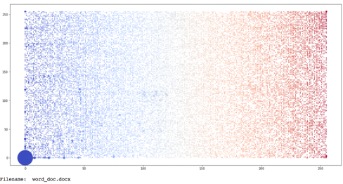
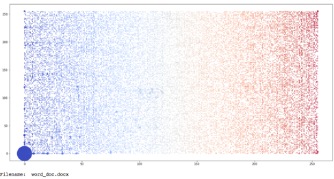
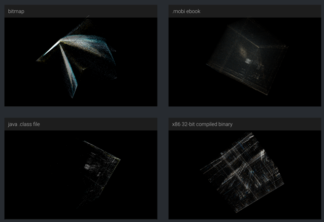
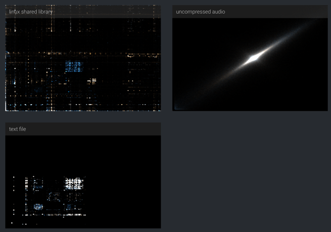
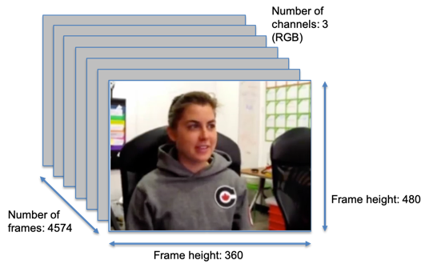
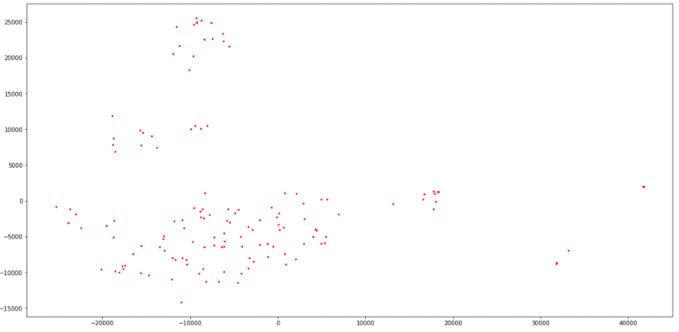
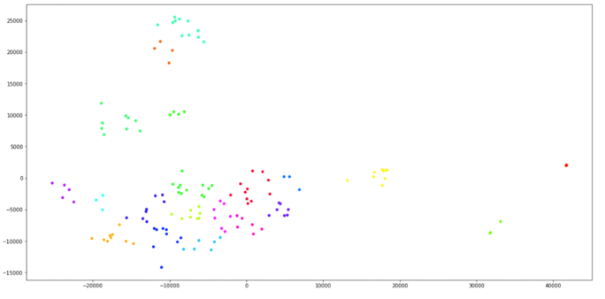
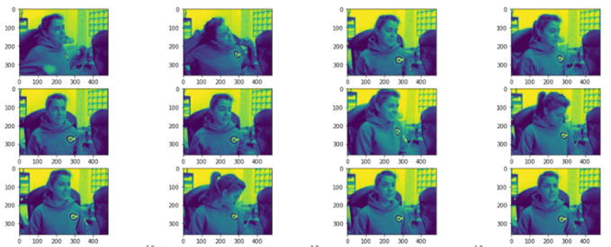

8: File, Image and Video Analytics#
Visualising Files#
Often, we may want to understand the data that resides on a computer, such as what files exist and their content. Furthermore, there exist a wider range of file formats that we may want to examine – ranging from binary data and executable files, through to text files and office documents, and even multimedia content such as image and video formats. In this session, we will begin to examine methods of analysis and visualisation that can help to understand such content beyond typical manual investigation.
Binary File Visualisation#
All data files stored on a computer system, no matter what their content is, can be expressed as a byte stream. This is the raw data that is processed by the computer to convert this data into a meaningful representation for the end-user, or to inform some other process or executable. As defined on Wikipedia, “the byte is a unit of digital information that most commonly consists of eight bits. Historically, the byte was the number of bits used to encode a single character of text in a computer and for this reason it is the smallest addressable unit of memory in many computer architectures.” An 8-bit representation can be used to express values in the range 0-255 (i.e., 00000000 to 11111111 in binary notation). Working with a byte stream for a file, we can then visualise these numerical values. Given the scale of information represented within a single file, we need a compact visual representation as we may be attempting to plot many values. Pixel visualisation is an effective technique where we can map numerical values to pixel colour values, to create an image based on the underlying numerical data.


In this example, we simply map each byte of the file to a colour value running left-to-right, top-to-bottom (i.e., run-length). This preserves order in the file content. The visualisation size is determined by the size of the file, which may be useful, however can make comparative analysis difficult. In the above, we show 3 files (a docx, a docx with password protection, and a docx with AES encryption), and we use a fixed width of 512 bytes. We can begin to examine similarities and differences between these files using the visualisation scheme. Most notable is that the password example shows the additional password data, and some commonalities with the original file, whereas in the AES example the data is fully encrypted and not recoverable without the encryption key.
Another approach is similar to that of ‘n-grams’ in text analytics, where we consider pairs of bytes to form a ‘digram visualisation’. In this setting, we take each pair of bytes and treat them as the X and Y coordinates to plot a point on a scatter plot. Points can be scaled based on number of occurrences if necessary, or colour-coded based on byte position or sequence. Below we can see examples of ‘jpeg’ file, a ‘txt’ file and a ‘docx’ file.
 


In the examples, the scatter plot is bound between the values of 0-255, and so helps maintain a consistent representation to help comparative analysis (e.g., frequency of byte pairs, density of byte pairs). A tri-gram could be created using triplets of bytes and plotted using a 3-D scatterplot (see examples at https://codisec.com/binary-visualization-explained/).
 
Image and Video Analysis#
Whilst binary file visualisation can be utilised for all forms of digital data, images and videos are a unique data format that lend themselves to further analysis. As visual stimuli, there are inherently understood and interpreted by humans. Image and video files are particularly large compared to many other file formats that are commonly used on most computer systems. Furthermore, image and video data has inherent spatial information that is fundmental for understanding their content. We will explore this further in this section.
Firstly, why may we be interested in image and video analysis for security? Closed circuit television (CCTV) has been used for many years to monitor physical environments from a security perspective so that incidents can either be identified at the time of the event, or at the very least, be examined after the incident has occurred. This results in many hours of video footage, that is likely difficult to search and retrieve specific content from. Beyond searching video based on time, how may we be able to search video based on other characteristics, such as when a person wearing a blue jacket is identified? We may also want to identify more sophisticated concepts, such as when particular actions occur (activity recognition), when particular persons are in the scene (facial recognition), or when a change in behaviour is observed (anomaly detection). In many ways, what we are interested in is a way of summarising video content, where a video is denoted as a series of sequential images of which we need to filter the volume of data being examined.
To motivate this example further, let us first recap on video attributes. A video is essentially a stack of sequential images. A single colour image is expressed by a computer as a 3-dimensional matrix: width x height x channels (where channels is typically RGB – red, green and blue). A video can therefore be expressed as a 4-dimensional matrix: width x height x channels x frames. For our example, we have a short video of 2 minutes 32 seconds. At the standard 30 frames a second, we have 4574 frames that make up the video. Our video has a frame height of 480 pixels and a frame width of 360. In short, our short video has over 2 billion data points.

What may we want to achieve from our analysis? Firstly, we may want to identify changes in our video stream, for example, if we have a CCTV stream, can we identify key frames where something may have changed? Secondly, can we group (cluster) similar frames together? This may help us to group similar patterns of activity, and identify activities that stand out as different in some way. For our examples, we will work with the McGill Real-World Face Video Dataset which is available online (and via Blackboard). It consists of 20 unique users where each users is filmed for a short interview clip of a couple of seconds. We will aim to identify changes in the scene (i.e., when a new users appears in the video) and also cluster frames for each user together.
As our first stages of analysis, we need to make the data more manageable to work with. We can begin by extracting a single frame per second (rather than 30 frames per second). Since we are not trying to track motion between frames this is fine for our application, and more importantly, makes the problem much more manageable at 153 frames rather than 4574. Secondly, we can reduce each video frame to a greyscale image, meaning that we have only a single colour channel rather than RGB. Again, colour is not required for the purpose of our application so we can afford to remove this. We now have a set of 153 greyscale images that represent our video, where each image is 480x360 resolution (172,800 pixels). We are going to adopt a technique from earlier in the course of principal component analysis (PCA). Recall that PCA will take high dimensional data and reduce this to a low dimensionality (e.g., 2 or 3-dimensional). Each point in our projection should represent a single image, and so the high-dimensional data is essentially the set of pixels that make up an image. Whilst spatial information in images is important for us humans to understand image content, it matters little to a machine. Therefore, we could reshape our image matrix, so that instead of being rectangular, it is a single row of data, or to put it another way, it is a vector of size (1, 172800). Providing we remap each frame in the same manner, then each column in our new matrix represents a unique pixel position that can be compared across all frames of our video. Having remapped each image frame to be a vector, we then stack these in sequence to form a new matrix of size (153, 172800).

Having remapped our data, we can now simply perform PCA on our matrix – as discussed before this will essentially identify the features (columns) of greatest variance across all instances (i.e., image frames) of our data. Luckily, we can use the sci-kit learn library to perform this task quickly and easily. We can plot the resulting values as a scatter plot, where we can begin to identify points that have clustered together. We now have a set of unlabelled points, and so as we have seen earlier in the course, we can use k-means clustering to assign labels to each point. We know in advance that k should be 20 – we have 20 unique users in the video data – and so having performed k-means clustering we can colour-code the scatter plot according to the group assignment. That’s it – we have now taken a video and identified the similarity between extracted image frames to cluster similar frames together.
 
To check this, we could display all images within a given group to see whether the frames do in fact appear similar – here we can see that these 12 frames all show the same woman. It should be noted that this method may not give perfect results – for example, removal of RGB may loss too much information – but hopefully it demonstrates the concept.


As for recognising change between video frames, we can easily use the same matrix remapping to achieve this. For each row, we calculate the absolute difference in pixel values between this row and the next. We can then summarize the total pixel differences using the mean to express this as a single difference value between two frames. Using a line plot as shown here, we can observe peaks that are likely the scene changes in the video, and so we can identify an appropriate threshold for scene change detection either manually using the plot, or automatically by separating the peaks from the smaller frame differences (which are a result of both motion and image noise / video compression artefacts).
Summary#
We have discussed methods for visualising file content, be it as raw binary data in the form of a byte stream, or in the case of richer multimedia such as image and video, how we can process raw image pixel data. One of the key points to raise is that we have been able to adopt many of the methods we have used previously in the course. This is important to recognise, since file data is essentially just another form of data that we can work with. Image and video present some further interesting challenges, primarily due to the inherent understanding that humans have of images and videos, however we can perform analysis on pixel data much as we can of any other data attributes.
Multimedia content such as image and video is shared online in such volumes nowadays that we need better methods for analysis of such data. As discussed, videos and inherent to humans but mean little to a machine – so how would a machine work to prevent the sharing of indecent video content? Given the nature of re-posting and sharing of videos, this becomes important to stop the spread of malicious or dangerous content online. Examples have ranged from videos of terrorist attacks, unwanted sharing of sexual videos, and intentional graphic violence injected in children’s video. Given how online video is now considered general behaviour for many households, ensuring video content is safe for users is a vital area of protecting cyber space. Video analysis also naturally plays into insider threat detection, open source intelligence, and forensic investigations. As technology continues to evolve with connected autonomous vehicles, health tech, and industrial IoT, video streaming and video analysis is a crucial aspect of such systems to analyse, detect and respond to real-time conditions – be it reacting to a moving vehicle to avoid a collision, or adjusting a medical dosage based on image analysis of a patient. Cyber criminals wanting to compromise such systems will inevitably exploit image analysis techniques – a prime example being the generating of deep fakes to falsify video content that is shared remotely. Therefore, as cyber security professionals, it is important to understand and acknowledge these attack vectors, and begin to consider how best to defend against them. As adversarial learning proves, relying on artificial intelligence alone may not help to combat the situation, but understanding how to process image and video content, and how to contextual video content to understand the story being told will ensure that as defenders we are better prepared to protect our systems, especially those that are becoming more and more embedded within our society.